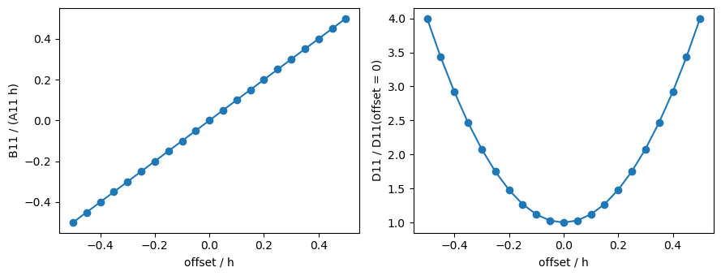

Getting started: plate properties for CLPT, FSDT and TSDT#
This tutorial creates laminates with laminated_plate and isotropic_plate and inspects the matrices used by the classical laminated plate theory (CLPT), the first-order shear deformation theory (FSDT) and the third-order shear deformation theory (TSDT), the equivalent properties, the effect of an offset of the reference surface, and the moments of the density used in mass matrices. SI units are used throughout.
[1]:
import numpy as np
import matplotlib.pyplot as plt
from composites import laminated_plate, isotropic_plate
np.set_printoptions(precision=4, suppress=False, linewidth=100)
# E11, E22, nu12, G12, G13, G23 of a CFRP ply
laminaprop = (142e9, 8.7e9, 0.28, 5.1e9, 5.1e9, 3.2e9)
rho = 1600. # kg/m^3
plyt = 0.125e-3 # m
A quasi-isotropic laminate#
The stacking sequence is given from the bottom to the top ply. ABD is the 6x6 matrix of the CLPT and of the FSDT, relating \(\{N_{xx}, N_{yy}, N_{xy}, M_{xx}, M_{yy}, M_{xy}\}\) to the membrane strains and curvatures of the reference surface.
[2]:
qi = laminated_plate([0, 45, -45, 90, 90, -45, 45, 0], plyt=plyt,
laminaprop=laminaprop, rho=rho)
print('h =', qi.h)
print('A =\n', qi.A)
print('B =\n', qi.B)
print('D =\n', qi.D)
h = 0.001
A =
[[5.9947e+07 1.8214e+07 0.0000e+00]
[1.8214e+07 5.9947e+07 1.8626e-09]
[0.0000e+00 1.8626e-09 2.0866e+07]]
B =
[[ 0.0000e+00 8.5265e-14 0.0000e+00]
[ 8.5265e-14 0.0000e+00 0.0000e+00]
[ 0.0000e+00 0.0000e+00 -2.8422e-13]]
D =
[[8.3812 1.2715 0.5232]
[1.2715 2.1027 0.5232]
[0.5232 0.5232 1.4925]]
B is zero for this symmetric laminate, up to round-off. A is isotropic, \(A_{11} = A_{22}\), \(A_{66} = (A_{11} - A_{12})/2\) and \(A_{16} = A_{26} = 0\), whereas D is not: the \(\pm 45\) plies give \(D_{16}\) and \(D_{26}\).
FSDT: transverse shear stiffness#
Ats contains the shear correction, by default with the equilibrium approach 'rohwer', and it is used as it is in an FSDT model. Abar_ts is the uncorrected constant-strain stiffness. scf_k13 and scf_k23 are the ratios between them, informative only.
[3]:
print('Ats =\n', qi.Ats)
print('Abar_ts =\n', qi.Abar_ts)
print('scf_k13 = %.4f, scf_k23 = %.4f' % (qi.scf_k13, qi.scf_k23))
Ats =
[[2948931.4831 43511.7955]
[ 43511.7955 3247625.5097]]
Abar_ts =
[[4.1500e+06 2.9104e-11]
[2.9104e-11 4.1500e+06]]
scf_k13 = 0.7826, scf_k23 = 0.7106
TSDT: higher-order matrices#
The TSDT uses as well E, F, H, the integrals of the ply stiffnesses times \(z^3\), \(z^4\), \(z^6\), and the uncorrected transverse shear matrices Abar_ts, Dts, Fts, integrals times \(1\), \(z^2\), \(z^4\). As B, the odd integral E is zero for a symmetric laminate, up to round-off.
[4]:
for name in ('E', 'F', 'H', 'Dts', 'Fts'):
print(name, '=\n', getattr(qi, name))
E =
[[0.0000e+00 1.0164e-20 0.0000e+00]
[1.0164e-20 1.3553e-20 0.0000e+00]
[0.0000e+00 0.0000e+00 6.7763e-21]]
F =
[[1.4909e-06 1.2375e-07 7.3577e-08]
[1.2375e-07 2.1560e-07 7.3577e-08]
[7.3577e-08 7.3577e-08 1.5690e-07]]
H =
[[2.8914e-13 1.4855e-14 8.8139e-15]
[1.4855e-14 3.0086e-14 8.8139e-15]
[8.8139e-15 8.8139e-15 2.0775e-14]]
Dts =
[[0.3013 0.0148]
[0.0148 0.3904]]
Fts =
[[4.2830e-08 2.0874e-09]
[2.0874e-09 6.0920e-08]]
Equivalent properties and the isotropic plate#
The equivalent membrane moduli follow from the inverse of ABD. An isotropic plate with these moduli and the same thickness has the same A, but not the same D, because the bending stiffness depends on the position of the plies through the thickness.
[5]:
print('e1 = %.4g, e2 = %.4g, g12 = %.4g, nu12 = %.4f'
% (qi.e1, qi.e2, qi.g12, qi.nu12))
iso = isotropic_plate(thickness=qi.h, E=qi.e1, nu=qi.nu12, rho=rho)
print('A, max relative difference:',
np.abs(iso.A - qi.A).max()/np.abs(qi.A).max())
print('D11 laminate / D11 isotropic: %.4f' % (qi.D11/iso.D11))
print('D22 laminate / D22 isotropic: %.4f' % (qi.D22/iso.D22))
e1 = 5.441e+10, e2 = 5.441e+10, g12 = 2.087e+10, nu12 = 0.3038
A, max relative difference: 2.485714270108366e-16
D11 laminate / D11 isotropic: 1.6777
D22 laminate / D22 isotropic: 0.4209
An unsymmetric laminate#
A cross-ply with two plies couples membrane and bending, B \(\neq 0\), and the odd integral E is no longer zero.
[6]:
cp = laminated_plate([0, 90], plyt=plyt, laminaprop=laminaprop, rho=rho)
print('B =\n', cp.B)
print('E =\n', cp.E)
B =
[[-1.0464e+03 0.0000e+00 1.8684e-15]
[ 0.0000e+00 1.0464e+03 6.2207e-14]
[ 1.8684e-15 6.2207e-14 0.0000e+00]]
E =
[[-8.1753e-06 0.0000e+00 1.4597e-23]
[ 0.0000e+00 8.1753e-06 4.8599e-22]
[ 1.4597e-23 4.8599e-22 0.0000e+00]]
Effect of the offset#
offset is the position of the mid-surface relative to the reference surface. For an isotropic plate the closed form is \(B = d h C\) and \(D = h (d^2 + h^2/12) C\), with \(d\) the offset: \(B\) grows linearly and \(D\) quadratically with the offset, while \(A\) and Ats do not change.
[7]:
h = 2e-3
offsets = np.linspace(-h/2, h/2, 21)
B11, D11, A55 = [], [], []
for d in offsets:
lam = isotropic_plate(thickness=h, E=70e9, nu=0.3, offset=d, rho=2700.)
B11.append(lam.B11)
D11.append(lam.D11)
A55.append(lam.A55)
lam0 = isotropic_plate(thickness=h, E=70e9, nu=0.3, rho=2700.)
fig, ax = plt.subplots(1, 2, figsize=(9, 3.5))
ax[0].plot(offsets/h, np.array(B11)/(lam0.A11*h), 'o-')
ax[0].set_xlabel('offset / h')
ax[0].set_ylabel('B11 / (A11 h)')
ax[1].plot(offsets/h, np.array(D11)/lam0.D11, 'o-')
ax[1].set_xlabel('offset / h')
ax[1].set_ylabel('D11 / D11(offset = 0)')
fig.tight_layout()
print('A55 constant:', np.allclose(A55, lam0.A55, rtol=1e-12))
A55 constant: True

Moments of the density#
The mass matrices use the moments \(I_n = \int \rho z^n dz\): intrho, intrhoz, intrhoz2 for the CLPT and the FSDT, and also intrhoz3, intrhoz4, intrhoz6 for the TSDT. Without offset the odd moments of a homogeneous plate vanish; with an offset \(d\), \(I_1 = \rho h d\) and \(I_2 = \rho h (d^2 + h^2/12)\).
[8]:
names = ('intrho', 'intrhoz', 'intrhoz2', 'intrhoz3', 'intrhoz4', 'intrhoz6')
d = 0.5e-3
for lam, label in ((lam0, 'offset = 0'),
(isotropic_plate(thickness=h, E=70e9, nu=0.3, offset=d,
rho=2700.), 'offset = %g' % d)):
print(label)
for name in names:
print(' %-9s = % .6e' % (name, getattr(lam, name)))
print('rho h d = % .6e' % (2700.*h*d))
print('rho h (d^2 + h^2/12) = % .6e' % (2700.*h*(d**2 + h**2/12)))
offset = 0
intrho = 5.400000e+00
intrhoz = 0.000000e+00
intrhoz2 = 1.800000e-06
intrhoz3 = 0.000000e+00
intrhoz4 = 1.080000e-12
intrhoz6 = 7.714286e-19
offset = 0.0005
intrho = 5.400000e+00
intrhoz = 2.700000e-03
intrhoz2 = 3.150000e-06
intrhoz3 = 3.375000e-09
intrhoz4 = 4.117500e-12
intrhoz6 = 6.593304e-18
rho h d = 2.700000e-03
rho h (d^2 + h^2/12) = 3.150000e-06
With different densities per ply, e.g. a sandwich with a light core, the argument rhos of laminated_plate gives one density per ply.
[9]:
face = laminaprop
core = (0.1e9, 0.1e9, 0.3, 0.04e9, 0.04e9, 0.04e9)
sw = laminated_plate([0, 90, 0, 0, 90, 0], plyts=[plyt, plyt, 5e-3, 5e-3,
plyt, plyt],
laminaprops=[face, face, core, core, face, face],
rhos=[rho, rho, 50., 50., rho, rho])
print('mass per unit area: %.4f kg/m^2' % sw.intrho)
for name in names:
print('%-9s = % .6e' % (name, getattr(sw, name)))
mass per unit area: 1.3000 kg/m^2
intrho = 1.300000e+00
intrhoz = 0.000000e+00
intrhoz2 = 2.518333e-05
intrhoz3 = 6.617445e-24
intrhoz4 = 6.150631e-10
intrhoz6 = 1.565537e-14